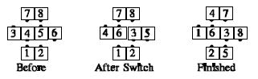

From a quarter tag, trade-by, or other appropriate formations: This call is followed by a fraction, which is the number of quarters to do the call (if not specified, 4 quarters). For each quarter: The center 4 dancers do the (Anything) call (or all 8 dancers if it's an 8-person call), then the outer 6 dancers move as they would to complete a Swing and Circle 1/4 (with the new outsides finishing facing in). This means that the (Anything) call must finish with two dancers as definite ends of the center formation, and those dancers must be facing opposite directions, and must be where the ends of the wave in a quarter tag formation would be.
For example: Switch and Circle 1/4:

At each quarter, the direction the outside 6 move is determined by which way the ends of the center formation are facing.
For example: Swing and Mix and Circle 1/2: